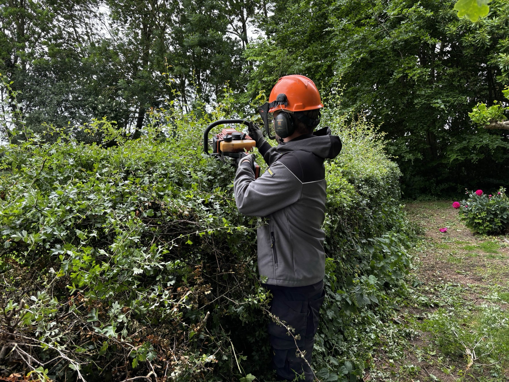
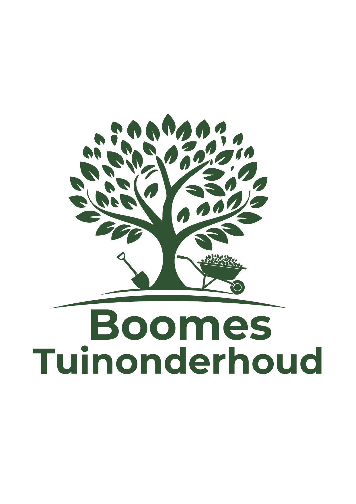
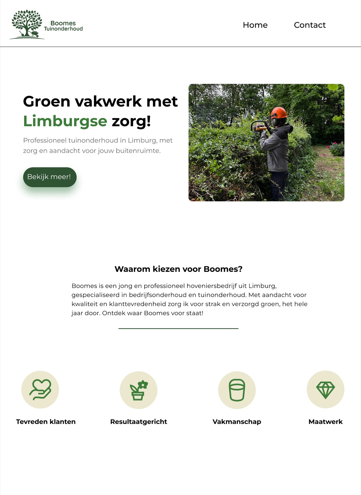
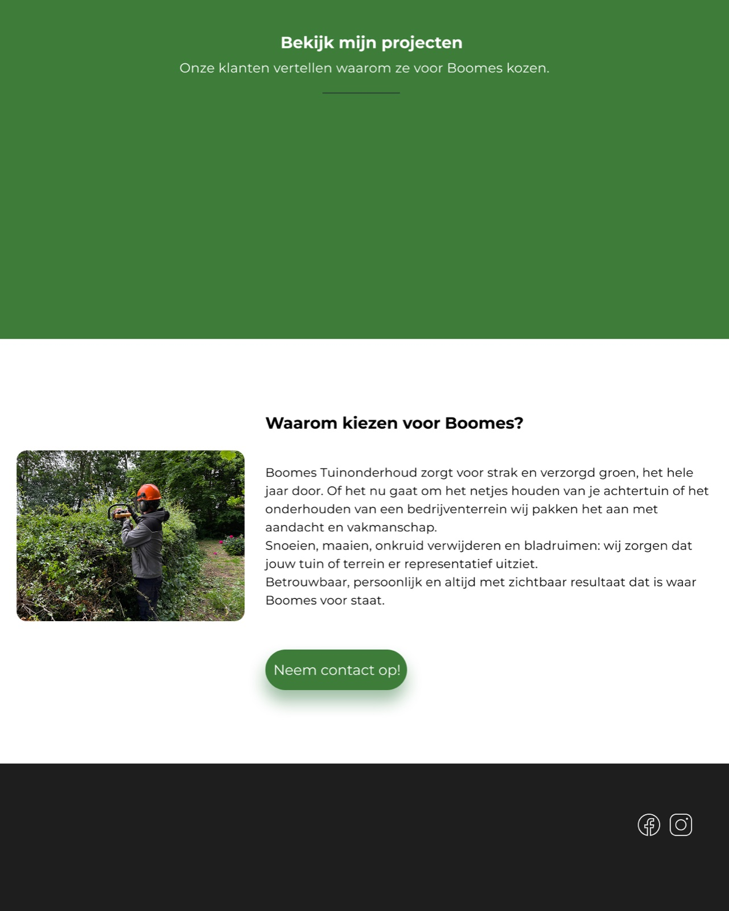

Overview
Boomes Tuinonderhoud was our first real client as Naxon Studio's. Bas, the owner, runs a garden maintenance business in Limburg and reached out to us to build his brand and website from the ground up. Before anything visual happened we sat down for a proper briefing so we actually understood who he was, the kind of clients he wanted, and what the work looked like day to day.
From there i worked through several logo directions in Illustrator until we landed on one that Bas felt really represented what he does, and we translated that into a clean, honest website in Figma that gets out of the way. Looking back there are details i would approach differently now, but this was the first time our studio took a project from zero to live on its own, and that part of the story still matters to me.
The mark

the logo we drew for Bas in Illustrator, one of a dozen tries before this one felt like him.

